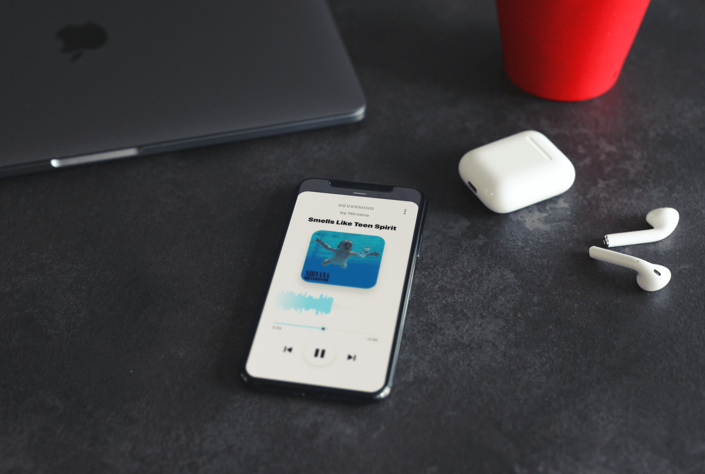

<doctype html>
<head>
    <title>Music Player App Concept | Case Studies | Left Hook Design</title>
    <meta name="description" content="Branding, packaging, and identity design package for Table Rock Dairy, a small family farm in Northern California making high quality goats milk soaps and more.">
    <meta name="keywords" content="design, logo, small business, branding, identity, packaging, business cards, goats milk, table rock dairy, soap making, handmade soap ">
    <!-- Social Share -->
    <meta property="og:title" content="Table Rock Dairy, Case Study by Left Hook Design, LLC">
    <meta property="og:description" content="Branding, packaging, and identity design package for Table Rock Dairy, a small family farm in Northern California making high quality goats milk soaps and more.">
    <meta property="og:image" content="http://lefthook.design/assets/casestudies/tablerockdairy/social-share.jpg">
    <meta property="og:url" content="http://lefthook.design/casestudies/tablerockdairy.html">
    <meta name="twitter:title" content="Table Rock Dairy, Case Study by Left Hook Design, LLC">
    <meta name="twitter:description" content="Branding, packaging, and identity design package for Table Rock Dairy, a small family farm in Northern California making high quality goats milk soaps and more.">
    <meta name="twitter:image" content="http://lefthook.design/assets/casestudies/tablerockdairy/social-share.jpg">
    <meta name="twitter:card" content="summary_large_image">
    <!-- main -->
    <meta http-equiv="Content-Type" content="text/html; charset=UTF-8" />
    <meta name="viewport" content="width=device-width, initial-scale=1, maximum-scale=1, user-scalable=no">
    <link rel="apple-touch-icon" sizes="180x180" href="/apple-touch-icon.png">
    <link rel="icon" type="image/png" sizes="32x32" href="/favicon@32.png">
    <link rel="icon" type="image/png" sizes="16x16" href="/favicon@16.png">
    <link rel="mask-icon" href="/safari-pinned-tab.svg" color="#2e205d">
    <link rel="manifest" href="/manifest.json">
    <meta name="theme-color" content="#ffffff">
    <!-- links & scripts -->
    <link rel="stylesheet" type="text/css" href="/assets/css/main.css" />
    <link href="https://unpkg.com/aos@2.3.1/dist/aos.css" rel="stylesheet">
    <script type="text/javascript"src="/js/gradient.js"></script>
    <script src="https://ajax.googleapis.com/ajax/libs/jquery/3.2.1/jquery.min.js"></script>
    <script src="https://www.w3schools.com/lib/w3.js"></script>
</head>
<body class="white-bg">
<div id="nav" class="nav scrolled full-width center-align hide-for-small"></div>
<div id="nav-mobile" class="nav scrolled center-align show-for-small"></div>
<div class="row max-width sm-text end-xs white-color relative" style="top: 80;">
    <a class="no-margin breadcrumb-first" href="tablerockdairy-print.html">&nbsp;</a><a class="no-margin breadcrumb">Music Player</a><a class="no-margin breadcrumb-last" href="ui-smarthome.html">&nbsp;</a>
</div>
<div class="row max-width lg-section middle-xs start-xs">
    <div class="col-xs-12 col-sm-8 sm-padding">
        <h1 class="" data-aos="fade-right" data-aos-once="true">UI and Design <span class="secondary-color"> for a Music App</span></h1>
        <h3 class="md-top-padding">A black and white user interface case study. We created our own music player to test new ui elements in a real world scenario.</h3>
    </div>
</div>
<div class="light-grey-bg md-section">
    <div class="row">
        <div class="col-xs-12 center-xs">
            
        </div>
    </div>
</div>

<div class="row white-bg md-section middle-xs">
    <div class="row center-xs max-width sm-padding center-xs around-xs">
        <div class="col-xs-12">
            
        </div>
        <div class="col-xs-12">
            
        </div>
    </div>
</div>
<div class="light-grey-bg md-section">
    <div class="row">
        <div class="col-xs-12 col-sm-6">
            
        </div>
        <div class="col-xs-12 col-sm-6">
            
        </div>
    </div>
</div>
<div class="row">
    
</div>
<div id="footer"></div>
<script>
    $("#nav").load("/closet/header.html");
    $("#nav-mobile").load("/closet/header-mobile.html");
    $("#footer").load("/closet/footer.html");
</script>
<script>
    function menuList() {
      var element = document.getElementById("menu-list");
      element.classList.toggle("block");
    }

    function closeMenu() {
      var element = document.getElementById("menu-list");
      element.classList.toggle("block");
    }
</script>

<script>
//add active class to current link
$(function(){
    var current = location.pathname;
    $('#nav a').each(function(){
        var $this = $(this);
        // if the current path is like this link, make it active
        if($this.attr('href').indexOf(current) !== -1){
            $this.addClass('active');
        }
    })
})
</script>
<script>
function goBack() {
    window.history.back();
}
</script>
<script src="https://unpkg.com/aos@2.3.1/dist/aos.js"></script>
<script>
  AOS.init({
    delay: 0,
    duration: 1000,
    easing: 'ease-in',
  });
</script>
</body>
</doctype>
